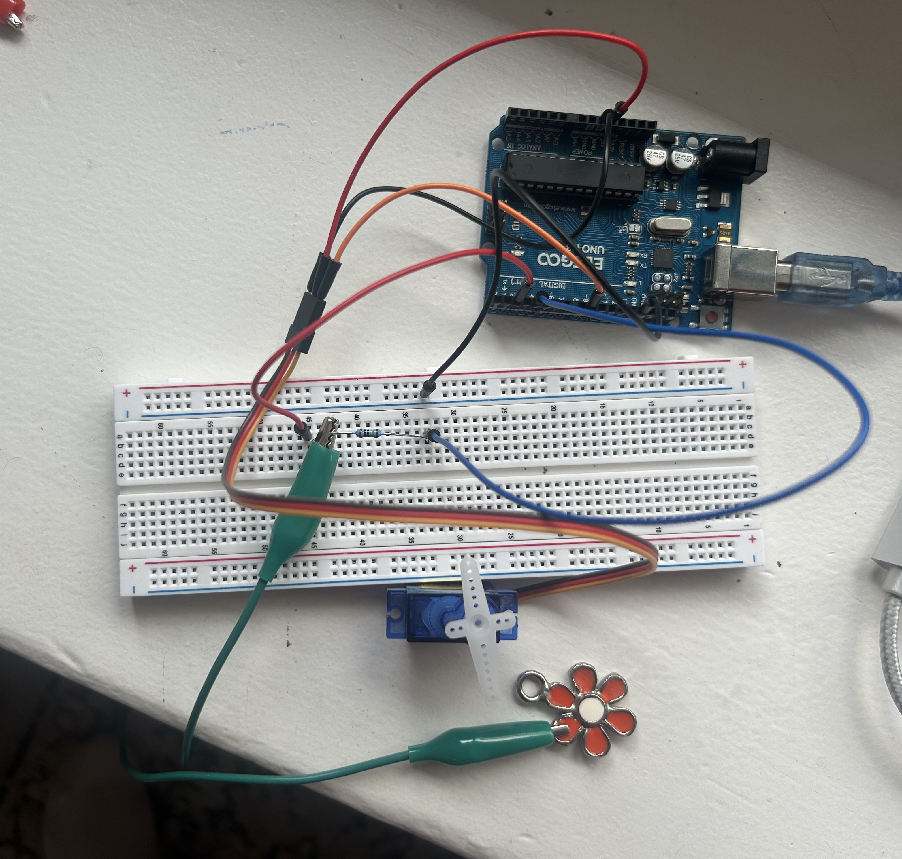
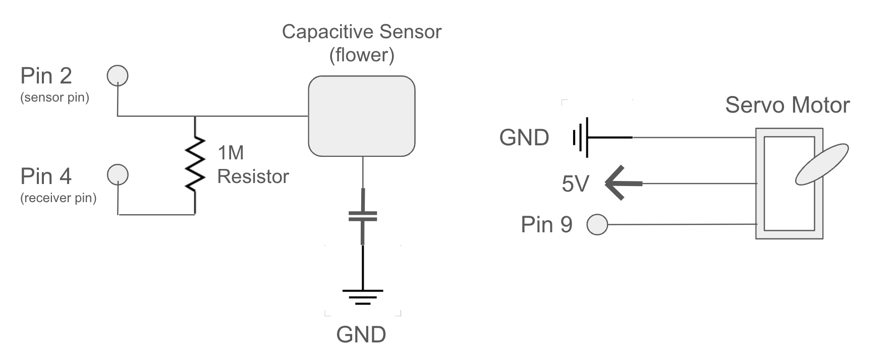
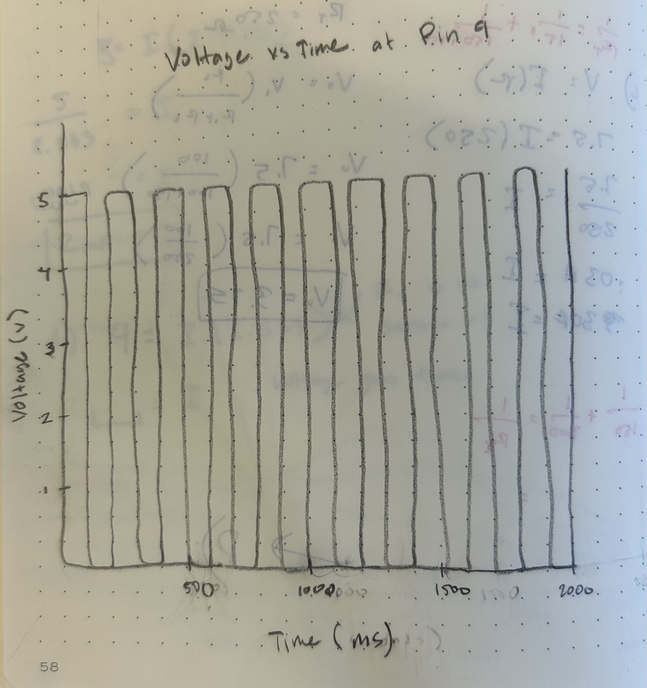

Circuit Gif

Serial Output from Calibration
These values represent the behavior of my capacitive sensor during both unpressed and pressed states. During the calibration, the maximum sensor value recorded was 1094 and minimum sensor value recorded during calibration is 0. This confirms that my calibrations are working because we can see the raw sensor value (21 unpressed and 1094 pressed) are being mapped to the min and max values (0,1094).
// Unpressed:
sensorMin: 0
sensorMax: 1094
1 21
sensorMin: 0
sensorMax: 1094
2 31
// Pressed:
sensorMin: 0
sensorMax: 1094
32 1094
sensorMin: 0
sensorMax: 1094
30 1094
Resistor Calculation
I used a 1M Ω for my capacitive sensor because I wanted the touch of the metal flower to activate the servo motor desired position. With a smaller resistor I am able to reduce sensitivity for a faster response time which makes my sensor function more like a button with a finger's direct touch. If I used any higher resistor such as 10M then the sensor would detect human touch from a inches away.
Circuit Image
Schematic
My capacitive sensor is connected to GND even though it doesn't necessarily need to be which is why I inlcuded GND in my specific schematic. The servo motor is connected directly into my arduinio uno and doesn't interact with my breadboard.
Arduino Code
In the first 5 seconds of running the code I covered and uncovered the capacitive sensor (input device) with my finger around 3-4 times to calibrate the max and min value readings. The program uses these calibration values to contrain and control the servo motor position (output device) based on if the capacitive sensor senses human touch directly on the metal flower. My servo monitor prints the actual sensor value when the flower is touched vs untouched and the min and max values that is there sensor is being constrained to during the pressed & unpressed phases.
The starter and calibration code was modified from slides L6: Parts and libraries & my previous A3 assignment.
#include // Servo Motor Library
#include // Capacitive Sensor Library
Servo myServo; // create servo object to control a servo motor
CapacitiveSensor cs_4_2 = CapacitiveSensor(4,2); // create capacitive sensor between pins 4 & 2
// variables for calibration
int sensVal = 0; // the sensor value
int sensorMin = 200000; // minimum sensor value
int sensorMax = 0; // maximum sensor value
void setup() {
myServo.attach(9); // attaches the servo on pin 9 to the servo object
cs_4_2.set_CS_AutocaL_Millis(0xFFFFFFFF); // turn off autocalibrate on channel 1
// initialize serial monitor
Serial.begin(9600);
// turn on LED to signal the start of the calibration period
pinMode(13, OUTPUT);
digitalWrite(13, HIGH);
long startCal = millis();
// calibrate during the first five seconds
while (millis() - startCal < 5000) {
long sensVal = cs_4_2.capacitiveSensor(30);
Serial.println(sensVal); // print the sensor value when touching the capacitive sensor during calibration
// record the maximum sensor value
if (sensVal > sensorMax) {
sensorMax = sensVal;
}
// record the minimum sensor value
if (sensVal < sensorMin) {
sensorMin = sensVal;
}
}
// signal the end of the calibration period
digitalWrite(13, LOW);
}
void loop() {
long start = millis();
long total1 = cs_4_2.capacitiveSensor(30);
total1 = constrain(total1, sensorMin, sensorMax); // constrain incase the sensor value is outside the range seen during calibration
sensVal = map(total1, sensorMin, sensorMax, 0, 180); // apply the calibration to the sensor reading, move servo position 180 degrees
Serial.print(millis() - start); // check on performance in milliseconds
Serial.print("\t"); // tab character for debug window spacing
Serial.println(total1); // print sensor output 1
myServo.write(sensVal); // control servo position based on calibrated sensor values
Serial.print("sensorMin: ");
Serial.println(sensorMin); // print the calibrated min sensor value
Serial.print("sensorMax: ");
Serial.println(sensorMax); // print the calibrated max sensor value
delay(10);
}
Additional Questions
Question 1
A time vs voltage graph for a servo motor in pin 9 would look like:
Question 2
To address a broken input device giving an erroneous reading 1% of the time, you could create a if statement that constrains the outlier erroneous behavior when reading in your raw sensor data. Since we know that the input device is giving errors 1% of the time, then we can use an if statement that continously checks if the sensor value deviates greatly from the expected change in sensor value. You would need to analyze the serial monitor values from the input's device in a calibration period to see what the magnitude of erroneous change is and then use that value in an if statement in void loop() such as: if (sensorValue > erroneousValue*prevSensorValue) then sensorValue = prevSensorValue which replaces the outlier data with the previous data value from the input's expected behavior.
void loop (
sensorValue = analogRead(sensorPin)
// Find erroneousValue based on serial monitor analysis in calibration period
serial.begin()...
Serial.print("sensorPin = ");
Serial.println(pinval);
// check to seee if raw value is an outlier to constrain sensorValue
if (sensorValue > erroneousValue * prevSensorValue) {
sensorValue = prevSensorValue;
}
// use constrained sensorValue for output device etc...
analogWrite(output, sensorValue);
)
Question 3
You could "smooth" the data being read from your slighly noisy input device which is causing random deviations of up to ±10. You could create a method that reads in that a set of sensor's raw input values and averages those values to midigate the effect of a 10% deviations from true readings. For the pseudo code, you would want to use a for loop to look at a list of readings I chose around 10 that creates a sum of values within that set number of input readings, this could look something like sumReading = sumReading + i. You would then calculate the average, like AverageSensorValue = adding past ten sensorValue / 10. You can use averaged reading by passing it into a analogWrite() for an output device. This uses an average reading rather than a a single sensor reading that controls randomly deviated reading from the true measurement up or down by 10%.
void loop (
// add 10 or a preffered number of readings to average
for (int i from 0 to numReadings) {
sensorValue = analogRead(sensorPin); // read raw sensor value from input
sumReadings = (sumReadings + sensorValue); // add readings
}
// calculate average sensor reading from input device
AverageSensorValue = (sumReadings / numReadings);
// control output device using averaged data
analogWrite(output, AverageSensorValue);
)